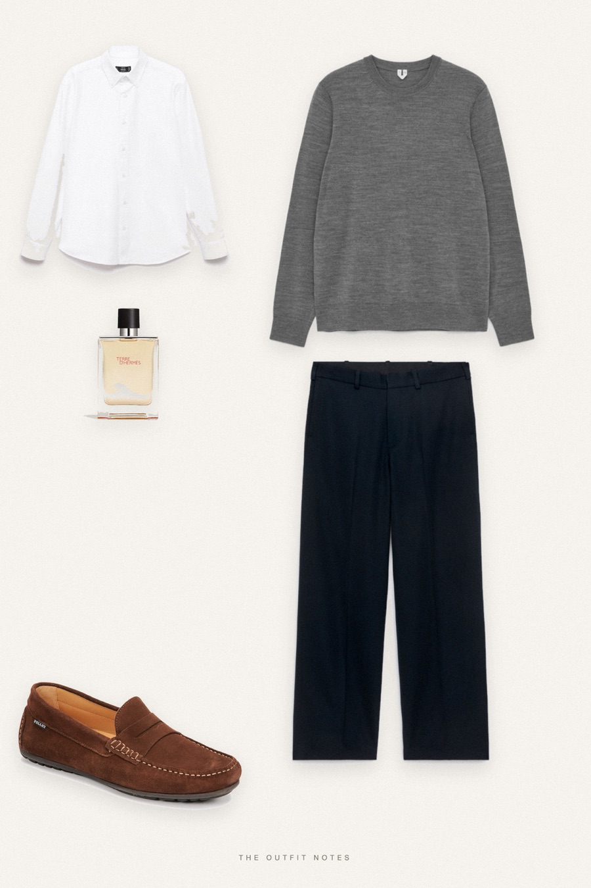
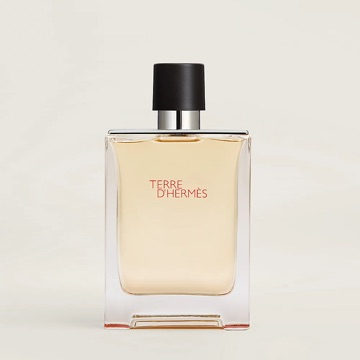

Gift Grey
merino over oxford, navy wool

Gift ideas for him in a clean smart casual look: ARKET grey merino jumper over a white Mango Oxford shirt, navy loose-fit wool trousers, cocoa suede loafers and Terre d'Hermès as the present. A Christmas outfit for men that works for dinner, the office and the weekend.
The pieces
This page contains affiliate links: if you buy through them, we may earn a commission at no extra cost to you. Disclosure.
 ARKET
ARKET
Grey fine-knit merino jumper
Shop Mango
Mango
White oxford shirt
Shop ARKET
ARKET
Navy loose wool trousers
Shop Pellet
Pellet
Cocoa suede loafers
Shop
Hermès
Terre d'hermès eau de toilette
Shop
Prices are indicative, taken when the look was published, and may have changed. Pictures of the outfit are AI-generated illustrations of real products; the product photos are the retailers' own.
Published 1 October 2026.